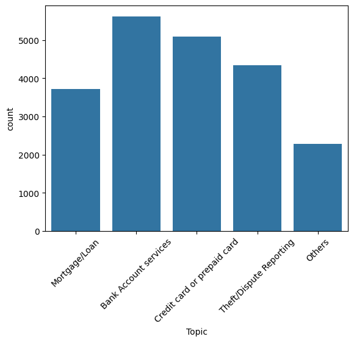

Automated Ticket Classification
Classify customer support tickets into product/service categories using topic modelling + supervised learning
Table of Contents
- Problem Statement
- Pipelines
- Data Preparation
- Exploratory Data Analysis (EDA)
- Topic Modelling
- Supervised Modeling & Evaluation
- Results & Conclusion
Problem Statement
Build a model to classify customer complaints (support tickets) into product/service categories so they can be routed to the correct department for faster resolution.
- Target categories (5): Credit card / Prepaid card, Bank account services, Theft/Dispute reporting, Mortgages/loans, Others
Pipelines (8 major tasks)
- Data loading
- Text preprocessing
- Exploratory data analysis (EDA)
- Feature extraction
- Topic modelling (NMF)
- Model building using supervised learning
- Model training and evaluation
- Model inference
Data Preparation
Key preprocessing steps applied before topic modelling:
- Drop blank / empty complaints
- Lowercase all text
- Remove text in square brackets, punctuation, and words containing numbers
- Lemmatize tokens
- Extract POS tags and keep only nouns (POS == "NN") to focus topics on substantive words
Exploratory Data Analysis (EDA)
- Visualise distribution of complaint lengths (characters)
- Word cloud of top 40 words after preprocessing
- Top unigrams, bigrams and trigrams by frequency

Topic Modelling
Applied NMF on TF-IDF features to extract 5 topics representing the target departments. Each ticket is mapped to its dominant topic; these topic labels are then used as targets for supervised training.

Supervised Modeling & Evaluation
After topic labels are derived, we train supervised classifiers. Typical steps:
- Create count vectors (CountVectorizer) and transform to TF-IDF
- Split data into train & test sets
- Train multiple models: Logistic Regression, Decision Tree, Random Forest (Naive Bayes optional)
- Evaluate with accuracy, ROC-AUC, classification report
Results (example)
Hyperparameter tuning with GridSearchCV found Logistic Regression performed best:
- Best Score: 0.9589979737224642
- Best Hyperparameters: {'C': 1, 'penalty': 'l1', 'solver': 'saga'}
Selected metrics:
- ROC AUC Score Train: 0.98
- ROC AUC Score Test: 0.95
- Train Accuracy : 0.85
- Test Accuracy : 0.78
Classification Report (Train)

precision recall f1-score support
0 0.85 0.90 0.87 4218
1 0.82 0.88 0.85 3818
2 0.90 0.63 0.74 1715
3 0.85 0.86 0.86 3261
4 0.89 0.87 0.88 2792
accuracy 0.85 15804
macro avg 0.86 0.83 0.84 15804
weighted avg 0.86 0.85 0.85 15804
Classification Report (Test)
precision recall f1-score support
0 0.79 0.85 0.82 1406
1 0.75 0.82 0.78 1272
2 0.78 0.45 0.57 572
3 0.79 0.79 0.79 1087
4 0.83 0.82 0.82 931
accuracy 0.78 5268
macro avg 0.79 0.75 0.76 5268
weighted avg 0.78 0.78 0.78 5268
Conclusion
Topic modelling (NMF) + supervised classifiers provide a pragmatic pipeline to convert unlabeled complaint data into routable categories. Logistic Regression with L1 regularization (saga solver) achieved the best results here; the pipeline is production-ready after further validation and monitoring.